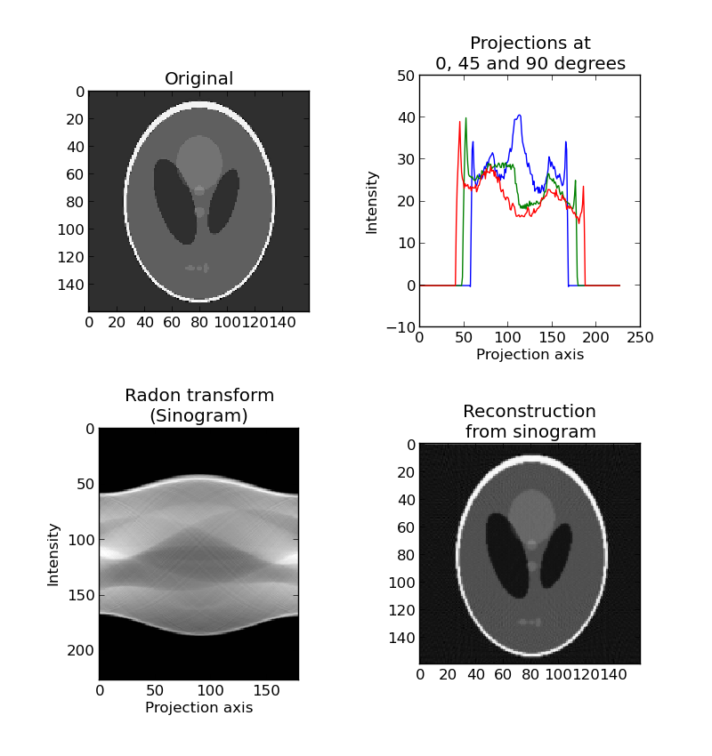

Radon transform¶
The radon transform is a technique widely used in tomography to reconstruct an object from different projections. A projection is, for example, the scattering data obtained as the output of a tomographic scan.
For more information see:
This script performs the radon transform, and reconstructs the input image based on the resulting sinogram.
import matplotlib.pyplot as plt
from skimage.io import imread
from skimage import data_dir
from skimage.transform import radon, iradon
from scipy.ndimage import zoom
image = imread(data_dir + "/phantom.png", as_grey=True)
image = zoom(image, 0.4)
plt.figure(figsize=(8, 8.5))
plt.subplot(221)
plt.title("Original");
plt.imshow(image, cmap=plt.cm.Greys_r)
plt.subplot(222)
projections = radon(image, theta=[0, 45, 90])
plt.plot(projections);
plt.title("Projections at\n0, 45 and 90 degrees")
plt.xlabel("Projection axis");
plt.ylabel("Intensity");
projections = radon(image)
plt.subplot(223)
plt.title("Radon transform\n(Sinogram)");
plt.xlabel("Projection axis");
plt.ylabel("Intensity");
plt.imshow(projections)
reconstruction = iradon(projections)
plt.subplot(224)
plt.title("Reconstruction\nfrom sinogram")
plt.imshow(reconstruction, cmap=plt.cm.Greys_r)
plt.subplots_adjust(hspace=0.4, wspace=0.5)
plt.show()
Python source code: download (generated using skimage 0.6)